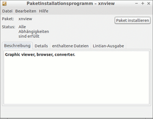

Paketinstallation DEB
Dieser Artikel wurde für die folgenden Ubuntu-Versionen getestet:
Dieser Artikel ist größtenteils für alle Ubuntu-Versionen gültig.
Zum Verständnis dieses Artikels sind folgende Seiten hilfreich:
 Manchmal sind Programme nicht über die offiziellen Paketquellen oder ein "Personal Package Archiv" (PPA) verfügbar, sondern werden einzeln zum Herunterladen angeboten – für Ubuntu idealerweise als Debian-Pakete (.deb).
Manchmal sind Programme nicht über die offiziellen Paketquellen oder ein "Personal Package Archiv" (PPA) verfügbar, sondern werden einzeln zum Herunterladen angeboten – für Ubuntu idealerweise als Debian-Pakete (.deb).
Hier sollte darauf geachtet werden, ob diese Pakete für Debian oder Ubuntu erstellt worden sind. Denn nicht jedes Debian-Paket ist zwangsläufig auch für Ubuntu geeignet und umgekehrt. Binärkompatibilität und die Eingliederung in die Verzeichnisstruktur spielen dabei eine Rolle. Auskünfte zur Eignung des Pakets lassen sich meist auf der Homepage des gewünschten Programms finden.
Debian-Pakete können wie nachfolgend beschrieben auf verschiedene Weisen installiert werden. Um ein solches manuell installiertes Paket wieder zu entfernen, kann man es wie gewohnt über die Paketverwaltung deinstallieren. Das ist auch der große Vorteil gegenüber Archivdateien wie z.B. .tar.gz oder .tar.bz2. Bei deren Deinstallation muss man sich auf die nicht immer vorhandenen, nicht standardisierten und u.U. ungeprüften Deinstallationsroutinen verlassen. Daher sollten nach Möglichkeit Paketdateien bevorzugt werden.
Hinweis:
Wer viele einzelne .deb-Pakete besitzt, dem wird das Einrichten einer lokalen Paketquelle empfohlen.
Desktop-abhängig¶
Ubuntu (Unity/GNOME) / Xubuntu (Xfce)¶
Bis einschließlich Ubuntu 15.10 können einzeln heruntergeladene Pakete mit einem Doppelklick auf das entsprechende Paket über das Software-Center installiert werden. Abhängigkeiten werden überprüft und ggf. automatisch nachinstalliert.
Der ab Ubuntu 16.04 eingesetzte Nachfolger Ubuntu Software verhält sich identisch. Wer eine alternative grafische Lösung bevorzugt, kann gdebi verwenden.
Kubuntu (KDE)¶
Einzelne .deb-Pakete können ab Kubuntu 11.10 über die Muon Paketverwaltung installiert werden. Durch einen Klick auf ein .deb-Paket im Dateimanager wird die Softwareverwaltung automatisch geöffnet, auf Abhängigkeiten geprüft und diese ggf. nachinstalliert.
Unabhängigkeit von GTK-Komponenten (siehe gdebi) erreicht man durch die Installation [1] der QAPT-Komponente:
qapt-deb-installer
 mit apturl
mit apturl
Paketliste zum Kopieren:
sudo apt-get install qapt-deb-installer
sudo aptitude install qapt-deb-installer
Lubuntu (LXDE)¶
Mit dem Lubuntu Software Center können keine einzelnen Pakete installiert werden. Wer eine grafische Oberfläche bevorzugt, kann gdebi verwenden.
Desktop-unabhängig¶
gdebi¶
|  |
| gdebi |
gdebi ist ein alternatives grafisches Installationsprogramm für Einzelpakete, das desktop-unabhängig eingesetzt werden kann. Es lädt bei Bedarf benötigte Abhängigkeiten aus den Paketquellen nach und war bis einschließlich Ubuntu 10.04 vorinstalliert. Inzwischen muss gdebi – außer bei Lubuntu – zuerst über das gleichnamige Paket nachinstalliert werden [1]:
gdebi (universe)
mit apturl
Paketliste zum Kopieren:
sudo apt-get install gdebi
sudo aptitude install gdebi
Nur KDE-Nutzern wird folgendes Paket empfohlen:
gdebi-kde (universe)
mit apturl
Paketliste zum Kopieren:
sudo apt-get install gdebi-kde
sudo aptitude install gdebi-kde
Die Bedienung ist einfach und selbsterklärend. Nach automatischer Prüfung des Status (Installation von Abhängigkeiten erforderlich? - falls ja, können diese angezeigt werden) betätigt man die Schaltfläche "Paket installieren", bestätigt die Berechtigung mit einer Kennwortabfrage und wartet, bis gdebi die erfolgreiche Installation zurückmeldet. Nun kann das Programm wieder beendet werden.
Unter Umständen erscheint ein Hinweis, dass eine Programmversion in den offiziellen Paketquellen vorhanden ist. Wenn man bewusst eine andere Paketversion installieren möchte, kann dieser ignoriert werden. Ansonsten sollte grundsätzlich die Version aus den offiziellen Paketquellen bevorzugt werden.
Terminal¶
Ab Ubuntu 16.04 kann im Terminal [2] bzw. auf der Kommandozeile der Befehl apt zur Installation eines .deb-Pakets verwendet werden. Bei älteren Ubuntu-Versionen muss hingegen der Befehl dpkg verwendet werden.
apt¶
Der Vorteil von apt gegenüber dpkg ist, dass Abhängigkeiten automatisch aufgelöst und installiert werden. Der Befehl lautet folgendermaßen:
sudo apt install /PFAD/ZUR/PAKETDATEI.deb
dpkg¶
Bei älteren Ubuntu-Versionen bis einschließlich 15.10 installiert man ein lokales Paket mit Hilfe des folgenden Befehls:
sudo dpkg -i /PFAD/ZUR/PAKETDATEI.deb
Statt "-i" kann auch die Langform "--install" verwendet werden. Wenn mehrere Pakete in einem Ordner installiert werden sollen, ist folgender Befehl hilfreich:
sudo dpkg -i *.deb
Hinweis:
dpkg löst im Gegensatz zu den oben beschriebenen grafischen Methoden und dem Befehl apt die Abhängigkeiten der zu installierenden Pakete nicht automatisch auf. Installiert man daher ein Paket, das von anderen abhängt, so kommt es zu Fehlermeldungen im Stil von:
sudo dpkg -i foo_1.0-0ubuntu1_all.deb
Wähle vormals abgewähltes Paket foo. (Lese Datenbank ... 42000 Dateien und Verzeichnisse sind derzeit installiert.) Entpacke foo (aus foo_1.0-0ubuntu1_all) ... dpkg: Abhängigkeitsprobleme verhindern Konfiguration von foo: foo hängt ab von bar (>= 0.6.1); aber: Paket bar ist nicht installiert. dpkg: Fehler beim Bearbeiten von foo (--install): Abhängigkeitsprobleme - lasse es unkonfiguriert Fehler traten auf beim Bearbeiten von: foo
Das Paket wird zwar installiert, ist aber aufgrund fehlender Abhängigkeiten noch nicht benutzbar. Mittels
sudo apt-get -f install
lassen sich die fehlenden Abhängigkeiten automatisch nachinstallieren.
Problembehebung¶
Synaptic¶
Falls ein Paket, dass nicht zur separaten Installation gedacht ist, weitere Pakete benötigt oder in anderer Weise nicht in die bestehende Installation passt, werden beim nächsten Start der Paketverwaltung Synaptic "defekte Pakete" gemeldet. Diese kann man mit
"Bearbeiten -> Defekte Pakete reparieren"
reparieren lassen. Dies führt entweder zur Installation weiterer Pakete oder zur Entfernung des problematischen Pakets. In letzterem Fall sollte man sich vergewissern, ob das Paket wirklich für Ubuntu geeignet war. Manchmal werden die Angaben zu den erforderlichen Abhängigkeiten bei der Paketerstellung falsch angegeben. Dann sollte man die Dokumentation des jeweiligen Programms zu Rate ziehen oder beim Entwickler nachfragen.
Unter Paketverwaltung/Problembehebung befindet sich eine Sammlung der am häufigsten auftretenden Probleme mit Lösungshinweisen.
Links¶
Paketverwaltung
 - Übersichtsartikel
- ÜbersichtsartikelAPT
Übersichtsartikel zum Advanced Package Tooldpkg - Debian Paketmanager
- Erstellt mit Inyoka
-
 2004 – 2017 ubuntuusers.de • Einige Rechte vorbehalten
2004 – 2017 ubuntuusers.de • Einige Rechte vorbehalten
Lizenz • Kontakt • Datenschutz • Impressum • Serverstatus -
Serverhousing gespendet von